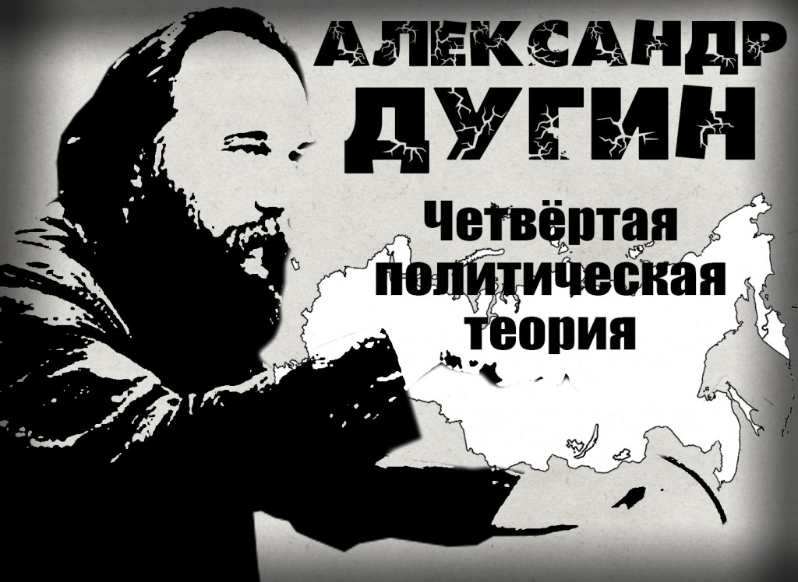

"Сегодня в мире складывается впечатление, что политика кончилась — по крайней мере та, которую мы знали. Либерализм упорно бился со своими политическими врагами, предлагавшими альтернативные рецепты, – с консерватизмом, монархизмом, традиционализмом, фашизмом, социализмом, коммунизмом – и, наконец, под занавес ХХ в. победил всех. Логично было бы предположить, что политика станет либеральной, а все ее противники, оказавшись на периферии, начнут переосмыслять стратегии и формировать новый фронт: периферия против центра (Ален де Бенуа). Но в начале XXI в. всё пошло по другому сценарию. Либерализм, всегда настаивавший на минимализации Политического, после своей победы решил вообще отменить политику. Возможно, чтобы не допустить формирования политической альтернативы и сделать свое правление вечным или из исчерпанности политической повестки дня в силу отсутствия врагов, которые, по Карлу Шмитту, необходимы для должного конституирования политической позиции. В любом случае либерализм повел дело к тому, чтобы свернуть политику. При этом изменился и сам он – перейдя от уровня идей, политических программ и деклараций на уровень вещей, войдя в плоть социальной реальности, которая стала либеральной, но не политически, а бытовым, «естественным» образом. В результате такого поворота истории свою актуальность утратили все политические идеологии, которые бурно враждовали друг с другом в течение последних столетий. Консерватизм, фашизм и коммунизм, а также их побочные разновидности проиграли, а либерализм, победив, немедленно мутировал в быт, потребительство, индивидуализм, постмодернистский стиль фрагментированного субполитического бытия. Политика стала биополитикой, переместилась на индивидуальный и субиндивидулаьный уровень. Получается, что сошли со сцены не только проигравшие политические идеологии, но политика как таковая, в том числе и либеральная. Поэтому-то пробуксовывает формирование альтернативы. Те, кто не согласен с либерализмом, оказались в сложной ситуации: победивший враг растворился и исчез; борьба идет с воздухом. Как заниматься политикой, когда политики нет? Выход только один: отказаться от классических политических теорий – проигравших и выигравших, и напрячь воображение, схватить реальности нового глобального мира, расшифровать корректно вызовы Постмодерна и создать нечто новое – по ту сторон политических битв XIX и XX вв. Такой подход есть приглашение к разработке Четвертой политической теории – по ту сторону коммунизма, фашизма и либерализма. Чтобы подойти к разработке этой Четвертой политической теории, необходимо:
| переосмыслить политическую историю последних веков с новых позиций, за рамками привычных идеологических клише старых идеологий | осознать глубинную структуру возникающего на наших глазах глобального общества; |
| корректно расшифровать парадигму Постмодерна; | научиться оппонировать не политической идее, программе или стратегии, но «объективному» положению вещей, самой социальной ткани аполитичного, фрактурализированного (пост)общества; |
| отказаться от глобалистских и атлантических идей | выстроить автономную политическую модель, предлагающую путь и проект в мире тупиков и бесконечного рециклирования одного и того же (пост-история, по Ж. Бодрияру). |